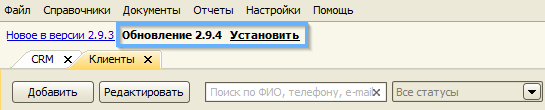
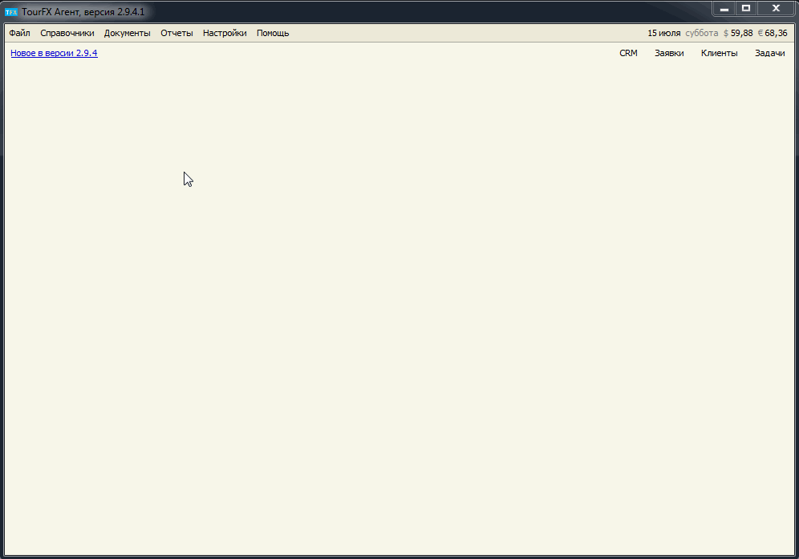
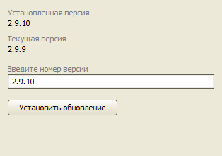

Обновление программы
macOS
Windows
Существует несколько способов обновления программы в операционной системе Windows. По-умолчанию, программа скачивает и устанавливает обновления автоматически. На некоторых компьютерах антивирусы и другие защитные программы препятствуют авто-обновлению. В таком случае рекомендуется отключить в настройках автоматическую систему обновлений и устанавливать новые версии из полного дистрибутива.
- Автоматическое обновление
- Установка файла обновления вручную
- Установка обновления по номеру версии
- Обновление программы установкой дистрибутива
Автоматическое обновление
Программа автоматически скачивает файл обновления, когда выходит новая версия. Для установки обновления достаточно перезапустить программу.

Установка файла обновления вручную
1) Скачайте файл обновления по этой ссылке.
2) В программе TourFX в меню "Файл" выберите пункт "Установить обновление" и в открывшемся окне выберите скаченный файл.

Установка обновления по номеру версии
1) Откройте форму "Обновление программы" в меню "Помощь".
2) Введите номер версии (текущая 2.9.17) и нажмите кнопку "Установить обновление".

Обновление программы установкой из дистрибутива
Программу можно обновить повторной установкой из дистрибутива в ту же папку, где находится программа. Обычно, это папка C:\TourFX
1) Скачайте установщик программы последней версии по этой ссылке.
2) Запустите скаченный файл и проведите полную установку в ту же папку, где была установлена программа, поверх существующих файлов и папок.
Выпущенные обновления
- 2.9.17
- 2.9.16
- 2.9.15
- 2.9.14
- 2.9.13
- 2.9.12
- 2.9.11
- 2.9.10
- 2.9.9
- 2.9.8
- 2.9.7
- 2.9.6
- 2.9.5
- 2.9.4
- 2.9.3
- 2.9.2
- 2.9.1
- 2.9
- 2.8
- 2.7
- 2.6
- 2.5
- 2.4
- 2.2
- 2.1
- 2
- 1.7
- 1.6
- 1.5
- 1.4
- 1.3
- 1.2
- 1.1
Остались вопросы? Напишите нам на e-mail